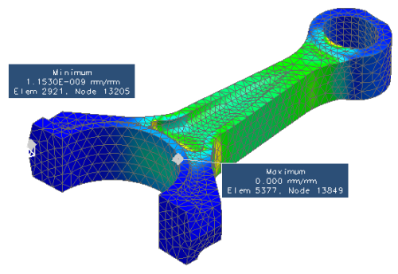

查询结果
高级仿真中提供了两个工具来查询指定节点或单元处的结果。
标记开/关
要快速找到所绘数据分量的最小和最大值，使用标记开/关  命令。
命令。

标识
使用标识  命令可探测并显示后处理视图显示中的节点和单元信息，您可以
命令可探测并显示后处理视图显示中的节点和单元信息，您可以
-
获取节点和单元 ID
-
显示节点和单元的结果
-
列出选定节点和单元的结果
-
将单元和节点数据写到电子表格或者.csv 文件中，用于定义在 NX 之外处理的字段